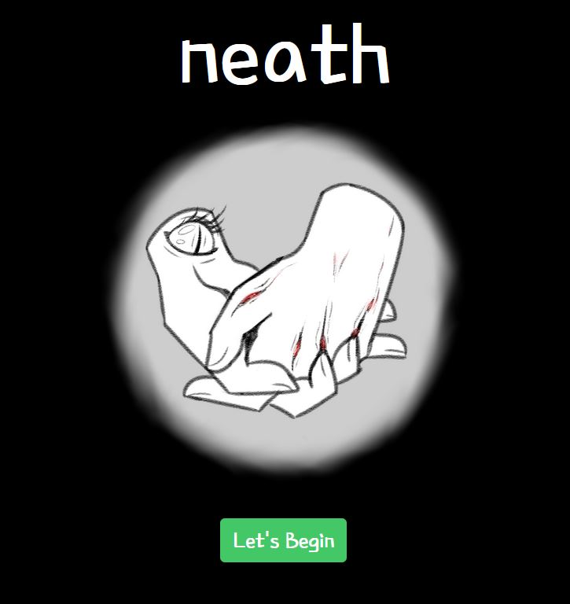

David Schmidt
Computer Audio Simulator
Fall 2022

My final project for CS4590, Computer Audio, at Georgia Tech. The project was built utilizing Processing as well as the Beads library. The simulator takes a sample song and alters it depending on simulated inputs of workout performance for three distinct exercises.
Blast N' Slash
Fall 2021

My final project for CS2261, Media Device Architecture, at Georgia Tech. It is a side-scrolling action platformer in the style of the Mega-Man series of games. It was built using C and assembly, and is playable on the Game Boy Advance.
Object Modeling & Animation
Fall 2022

This was a project done for CS3451, Computer Graphics, at Georgia Tech. It is an animation of Bart Simpson riding and falling off of skateboard. The scene was modeled by myself using Processing and Python.
Neath
Fall 2021

This was a group project done for LMC2400, intro to Game Studies, at Georgia Tech. It is a text-based interactive narrative with heavy psychological horror elements and created using the Twine game engine. I was responsible for writing the majority of the game's script, which included outlining the story and designing the different narrative routes that the player can choose.
GBA Pac-Man
Fall 2021
This was one of the projects I completed as part of CS2261, Media Device Architecture. This project is a recreation of the classic arcade game "Pac-man" and was built using C and assembly. It is playable on the Game Boy Advance.